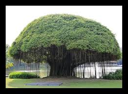

Banyan Tree (Ficus benghalensis)
Scientific Name: Ficus benghalensis
Description: The Banyan tree is one of the largest trees in the world, known for its extensive root system. It is considered sacred in many cultures, especially in India. The tree is known for its unique aerial roots that grow from the branches, eventually forming new trunks.
Care Tips:
- Water: Needs regular watering, especially during dry periods.
- Light: Thrives in full sunlight.
- Temperature: Prefers warm tropical climates with temperatures between 25°C and 35°C.
- Soil: Prefers well-drained, loamy soil.
Uses:
The Banyan tree is used in traditional medicine and is known for its ability to purify the air and provide shade. Its leaves and bark have numerous health benefits in Ayurvedic practices.